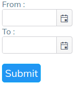

Getting Started
StrandNGS Server Analytics can be accessed from StrandNGS Manager.Open StrandNGS Manager and click on StrandNGS Server Analytics link given ( See Fig. 1.1 ).This will open new tab and will launch StrandNGS Server Analytics
Fig. 1.1 StrandNGS ManagerLogin
StrandNGS Server Anlalytics opens in login page when its is lauched for first time.Following things are required to login
1)Username
2)Password.
Entering Correct Username and Password and logging ( See Fig. 1.2 ) in will redirect to Job-Statistics Page.
Job Stats
This page shows job statistics.This page is divided into Three parts.
1)Header - Contains Links to same Impotant pages and option for Logout and Change password
2)Filter's Panel - It hold many types of filters which can be selected to filter data and then to see plots
3)Dashboard - This part contains details about filters selected and eight different plots
1)Average Job Waiting Time
2)Compute Node Usage
3)Context Distribution Plot
4)Status Distribution Plot
5)Compute Usage by Users
6)Total Time of Job for Different Users
7)Wait Time Histogram
8)Cumulative Wait Time Plot
9)Task Distribution Plot
Sample Stats
This page shows sample statistics.This page is divided into Three parts.
1)Header - Contains Links to same Impotant pages and option for Logout and Change password
2)Filter's Panel - It hold many types of filters which can be selected to filter data and then to see plots
3)Dashboard - This part contains details about filters selected and six different plots
1)Number of Samples per User
2)Total Size of Samples per User
3)Monthly Plot for Number of Samples
4)Monthly Plot for Size of Samples
5)Relative Number of Samples Distributed Among Organisms
6)Relative Size of Samples Distributed Among Organisms
Filters
Filter panel could be found on right side of both jobStats and sampleStats page.This is used to filter data according to need and plot all graphs for that data or to manipulate view of graph.For e.g. To see plots for specific user group, To change monthly plot to quaterly or yearly plot and lot more.Filter options are hidden by defaults.On clicking plus sign besides filter name options appear.Then can be hidden again by clicking minus button ( See Fig. 1.3 and Fig. 1.4) .As soon as any filter is changed, plots get updated (except for time range filter in duration ).One refresh button is available at top of filter panel to refresh plots.
For filters having checkbox list select all and clear all option is available.Checking first checkbox in list will select all options under that filter while unchecking that will deselsect all ( See Fig. 1.5 and Fig. 1.6 )
Filters Available in JobStats Page
1)Duration : This filter is to filter data in some specific time range or to see plots in specific time range.
Options Available under Duration Filter are :
- Past-Quater : To see plots for past quater year
- Past-Year : To see plots for past year
- Past-Two-Years : To see plots for past two year
- Past-Three-Years : To see plots for past three year
- All : To see plots for All Data ( Default )
- Time-Range : Select Time range according to usecase
On clicking time range option two inputs with datepicker will be shown.First is for Starting time and second for End Time.Then click submit button to update plots ( See Fig. 1.7 )
 Fig. 1.7 TIme Range inputs with date picker2)Aggregation : As name suggests this filter is to change aggregation of data.
Options Available under Aggregation Filter are :
- Monthly : To see plots per month ( Default )
- Quaterly : To see plots per quater year
- Yearly : To see plots per year
3)Context : This filter is to see plots for some context of jobs
Options Available under Context Filter are ( All Checked by Default ) :
4)Status : This filter is to see plots for jobs with specific status
Options Available under Status Filter are ( All Checked by Default ) :
5)Task Name : This filter is to see plots for jobs with specific task name
Options Available under Task Name Filter are ( All Checked by Default ) :
6)Users : This filter is to see plots for specific group of users 7)Compute Node : This filter is to see plots for specific compute node data
Options Available under Users Filter are ( All Checked by Default ) :
Options Available under Aggregation Filter are ( All Checked by Default ) :
Filters Available in SampleStats Page
1)Duration : Same as JobStats Duration Filter
2)Aggregation : Same as JobStats Aggregation Filter
3)Users : Same as JobStats Users Filter
4)organisms : This filter is to see plots for specific group of organisms
Options Available under Aggregation Filter are ( All Checked by Default ) :
General Information About Plots
Hovering over any part of pie chart, any point in line chart and any bar in bar chart shows tooltip.This tooltip shows relavant information about that part, point or bar in plot.(Note : No. of jobs in some tooltips of jobStats mean total that number of jobs contribute over there and No. of smaples in some tooltips of sampleStats mean total that number of sample contribute over there.)
Clicking on any plots open a popup and shows enlarged plot ( See Fig. 1.8 ) which can be closed by cross button on top right corner, clicking on black portion outside pop up or pressing Esc key.
Fig. 1.8 Enlarged PlotClicking on parameter value at the top of the plot toggles that parameter in the plot i.e. on clicking once it will remove and on again clicking it will include that paramter agin in the plot ( See Fig. 1.9 ).It is one kind of instant filter for that plot.
Fig. 1.9 Toggling Parameter in PlotGetting Details of Point, Bar or Part of Plot :
Clicking on any point, bar or part in Enlarged Plot will open new popup.This popup shows all the details of jobs or sample that contributed to that portion of plot.( See Fig 2.0 and Fig. 2.1 ).It shows Title of plot, Name of portion whose details are shown, total number of records displayed, table of details and button to copy whole table to clipboard.
Fig. 2.0 Details of Some Portion of JobStat Plot Fig. 2.1 Details of Some Portion of SampleStat PlotSorting Details of Plot
For sorting details inside table click on any header of table.This will sort entire table on the basis of that header.For e.g.1) By clicking on wait time will sort table on the basis of wait time. 2) By clicking on task name will sort table on basis of task name.
This type of thing can be done for all headers in that table.
Here 2 types of sorting functionalities are available.Clicking once on any header will sort table in ascending order, clicking second time will sort table in descending order while clicking third time will reset table and so on.( See Fig. 2.2, Fig. 2.3 and Fig 2.4 )
Fig. 2.2 Table Sorted in Ascending Order on the Basis of Submission time Fig. 2.3 Table Sorted in Ascending Order on the Basis of Submission time Fig. 2.4 Table in Default OrderOpening Logs of Task :
Click on Task-Id in details popup to see log files and other related information of this task(job).By doing this new tab will be opened.( See Fig. 2.5 )
This page is divided horizontally in two parts.Partitions can be resized by dragging from middle.left lide partitions shows :
- Task Information (Collapsed By Default)
- Tool Information (Collapsed By Default)
- ( if present in log file) Sample Information (Shown By Default)
While right side partitions has three tabs :
- Summary of Task
- StdOutput File
- StdError File
StdOut tab and StdErr tab on right has option to download respective files.
Fig. 2.5 Logs and Related Information of Job with TaskId : 1498207894791Here at the top of page there is functionality to search jobs with their taskId.Search for taskId there and if it is valid then all information of that task will be shown else message with not valid taskId will be shown
Details of Working Compute Nodes
To see details about working compute nodes open StrandNGS Manager ( See Fig. 1.1 ).Open link Compute Node Details provided there.This will open new tab showing details about currently working compute nodes.( See Fig. 2.6)
On left side there is list of currently working compute nodes' ip address with their status ( currently working or free ).Green symbol shows compute node is free now while red symbol shows that it is busy.Clicking on ip address in the list shows details of that compute node on left side of page
Fig. 2.6 Compute Node Details PageChange Password
After Logging in top right portion of app shows username.Click on that username which will open one drop down( See Fig. 2.6 ).It shows change password option.Click on Change Password which will take to new page for changing password ( See Fig. 2.7 ).
Fig. 2.7 DropDownEnter Old Password ( Obviously Correct One! ), New Password of your wish, Confirm it and hit Change Password.If old password is correct and new password is confirmed correctly then you would be logged out and redirected to login page, which mean password is changed.Now, login with new password.
In between you change your mind and don't want to change password, clcik on cancel and you will be redirected to previous page.
 Fig. 2.8 Change Password Page
Fig. 2.8 Change Password Page
Logging Out
After Logging in top right portion of app shows username.Click on that username which will open one drop down( See Fig. 2.7 ).It shows logout option.Click on it to logout